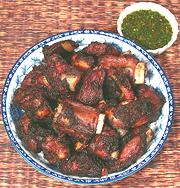

|
Marinated Pork RibsThai / California | ||||
| Serves: Effort: Sched: DoAhead: |
6 app *** 4 hrs Note-5 |
This delicious appetizer is one of my favorites! I call it "Thai California" because I don't know the recipe's origin, though the ingredients are certainly Thai. | |||
| Ovens are very scarce in Thailand. A recipe like this would need to be wrapped in banana leaves and roasted over slow coals, which you can do if you wish (foil will also work). The color will be much lighter. This recipe has no intrinsic hotness - that comes from the dipping sauce used. | |||||
|
3 ---- 5-1/2 8 2 6 3/4 2/3 1/2 1 4 2 ---- ar |
# --- oz in cl c t t T T T --- |
Spare Ribs (1) -- Marinade Shallots Scallions Ginger root Garlic Cilantro (2) Salt Black Pepper Palm Sugar (3) Soy Sauce Fish Sauce -- Serve with Dipping Sauce (4) |
Prep (2-1/2 hrs - 25 min work)
|